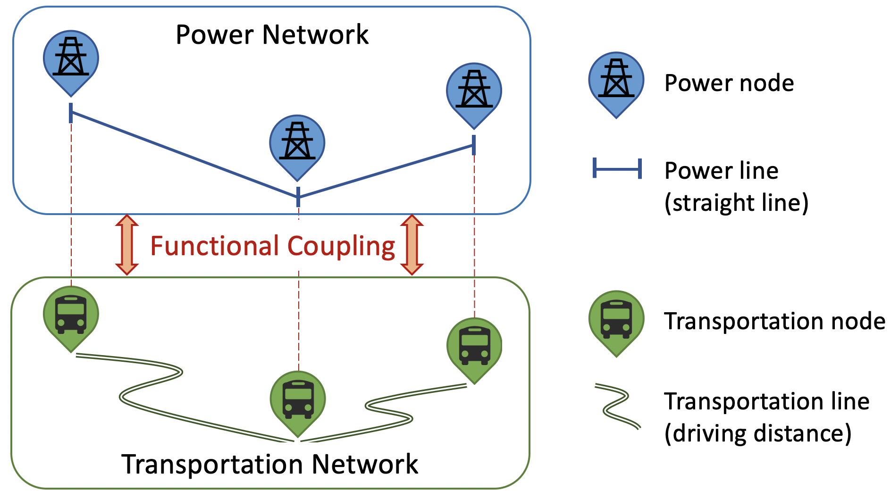

A Coupled Transportation and Power Network Visualization in the Browser
Welcome to our interactive webpage, designed to revolutionize electric bus planning!
Here, you'll find a powerful tool that generates coupled power and transportation network models.
This innovative platform is an invaluable resource for scientists and city planners. It facilitates interdisciplinary decision-making by providing insights into the impacts of electric bus operations on both the power grid and transportation systems.
Dive in and explore how our tool can assist in creating more efficient, sustainable urban environments!
 Functional interconnection of nodes in the coupled power and transportation network.
📖 Existing Case Study
Explore the intricacies of coupled power and transportation networks in three exemplary cities - King County, WA, Austin, TX, and Salt Lake City, UT. 🌟 Get ready to zoom in and explore the big, busy world of power and transportation networks. You'll see every tiny detail - it's like being a detective for cities!
✍️ Create Your Own Networks
You have the unique opportunity to create a custom network for your own city's electric bus planning. 🚌 It's simple and loads of fun! Just follow these easy steps:
- Download a General Transit Feed Specification (GTFS) data file for your city's buses (you can usually find this on Google).
- Drag and drop the zip file into the box below.
- Click on "Generate" and watch the magic happen!
📂 Drag and drop your file into the box or click to select a file.
After you upload your file, click on the button below to generate your network 🌟.